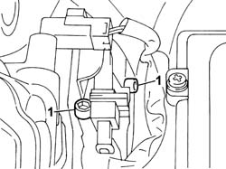
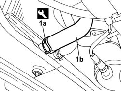
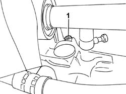

0010T20 COOLANT CHECK DENSITY AND TOP UP IF NECESSARY
- Path
- Procedures > 00 MAINTENANCE > 0010 NEW VEHICLES AND MAINTENANCE > 0010T VEHICLE FLUIDS > 0010T20 COOLANT CHECK DENSITY AND TOP UP IF NECESSARY
- Kind
- repair procedure (removal / refitting; the operation number is the code)
- Applies to
- engines: 3.0 24V V6; all production periods
- Interactive page
- https://sloeber94.github.io/elrnDB-fUlss/en/#/179006817
Applies to: engines: 3.0 24V V6; all production periods
 Removing
Removing
 Refitting
Refitting- Position the vehicle on the lift.
- Position a suitable container under the engine.
- Undo the engine coolant reservoir cap.
1. Loosen the bleed screws located on the coolant manifold on the cylinder heads, flywheel side.

Applies to: engines: 3.0 24V V6; all production periods
1. Using the special tool, loosen the fastening band (1a), disconnect the lower hose (1b) from the radiator and drain the coolant into the container.
 | Description | Code | Function |
|---|---|---|---|
1a | Caliper | 1.881.138.000 | Band opening pliers. |

Applies to: engines: 3.0 24V V6; all production periods
1. Undo the drainage screw located on the cylinder block/crankcase rear wall.

Applies to: engines: 3.0 24V V6; all production periods
Refitting
Removing- Replace the gaskets and tighten the drainage screw located on the cylinder block/crankcase rear wall to the recommended torque.
 | Value - daNm | Fastening | Component | Ø |
|---|---|---|---|---|
. | 3.0 | Bolt | ENGINE COOLANT - REPLACE |
- Connect the lower hose to the radiator and, using the special tool, fasten it using the band.
| Description | Code | Function |
|---|---|---|---|
. | Caliper | 1.881.138.000 | Band opening pliers. |
- Refill the circuit, introducing the engine coolant into the reservoir slowly.
 | Description | Qty. | Component | Type | Classification |
|---|---|---|---|---|---|
. | PARAFLU 11 | 11 Litri | ENGINE COOLANT - REPLACE | Fluid |
- Close the bleed screws located on the coolant manifold on the cylinder heads when the fluid comes out without bubbles.
- Start the engine and let it run at between 1500 and 2000 rpm until the end of the second cooling cycle (fans cutting in and switching off), topping up as appropriate to maintain the correct level in the coolant reservoir.
- Let the engine idle for a few minutes
- Switch off the engine and close the coolant reservoir cap
- With the engine cold, undo the reservoir cap and top up the coolant level until it is at the max reference.
- Tighten the engine coolant reservoir cap.
Op. 7055B54 UNDER-ENGINE GUARD - R R
- Remove the vehicle from the lift.